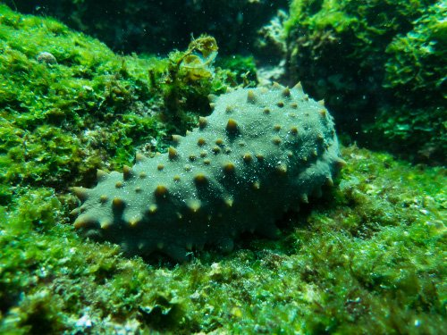
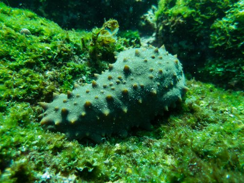

Isla Galapagos
Las islas Galápagos son un archipiélago volcánico del océano Pacífico.
Es conocido como uno de los destinos más famosos del mundo para la observación de fauna. Es una provincia de Ecuador y se encuentra a unos 1,000 km desde sus costas. Su terreno aislado alberga una diversidad de especies animales y vegetales, muchas de ellas exclusivas. Charles Darwin lo visitó en 1835 y su observación de las especies de Galápagos inspiró posteriormente su teoría de la evolución.

Ubicacion de la Isla Galapagos
Las Islas Galápagos se encuentran en el Océano Pacífico, a unos 1,000 kilómetros (aproximadamente 620 millas) de la costa continental de Ecuador, país al que pertenecen. Este archipiélago volcánico se ubica justo sobre la línea ecuatorial y es famoso por su biodiversidad única de flora y fauna
-
Continente Sudamérica.
-
País: Ecuador.
-
Océano: Pacífico.
-
Coordenadas aproximadas: 0º 00' de latitud y 90º 00' de longitud Oeste.
-
Distancia a la costa continental: Aproximadamente 1,000 km (620 millas) al oeste de Ecuador
Geografia de la Islas Galapagos
Las Islas Galápagos son un archipiélago volcánico del océano Pacífico, ubicadas a unos 1.000 km al oestede la costa de Ecuador, país al que pertenecen. Son famosas por su biodiversidad única y por haber inspirado la teoría de la evolución de Charles Darwin, quien las visitó en 1835 durante su viaje en el HMS Beagle.

Principales Islas de Galapagos
-
Isabela
- Superficie: ~4.588 km² (más del 50% del total del archipiélago)
- Volcanes principales: Sierra Negra, Cerro Azul, Alcedo, Darwin, Wolf, Ecuador
- Población: ~2.000 habitantes (principalmente en el pueblo Puerto Villamil)
- Ubicación: Al oeste del archipiélago, es una de las islas más biodiversas y menos desarrolladas turísticamente
Volcán Sierra Negra
Uno de los cráteres más grandes del mundo (10 km de diámetro).
Aún activo (última erupción en 2018).
Se puede hacer una caminata guiada hasta el borde del cráter, con vistas espectaculares y paisajeslunares.
Centro de conservación de tortugas gigantes endémicas de Isabela.
Puedes ver tortugas de diferentes edades y aprender sobre los esfuerzos para suconservación.
-
Los Humedales
Red de senderos entre manglares, lagunas y pantanos.
Hogar de flamencos rosados, iguanas marinas, cangrejos, y muchas aves.
Accesibles a pie o en bicicleta desde Puerto Villamil.

Una de las playas más bonitas de Galápagos.
Arena blanca y aguas tranquilas.
Perfecta para nadar, descansar o ver iguanas marinas tomando el sol.
Laguna natural ideal para snorkel cerca del muelle.
Puedes ver leones marinos, rayas, tortugas marinas y peces tropicales.
-
A pocos minutos en lancha desde Puerto Villamil.
Snorkel con tiburones de punta blanca, pingüinos de Galápagos, iguanas marinas y más.
Carga histórica fuerte y vistas panorámicas desde los miradores.
Islas principales por tamaño y población
Es la isla más grande del archipiélago y está formada por seis grandes volcanes. La Isla Isabela es la más grande del archipiélago de Galápagos y una de las más impresionantes en cuanto a paisajes volcánicos, biodiversidad y experiencias naturales únicas. Es una isla joven, formada por la unión de seis volcanes, varios de los cuales siguen activos.
Características generales
Que podemos ver en las Isla Isabela

Centro de Crianza Arnaldo Tupiza

Playa de Puerto Villamil


Concha de Perla


Islote Tintoreras


Muro de las Lágrimas
Antigua construcción hecha por prisioneros en el siglo XX, cuando la isla albergaba una colonia.

Santa Cruz
-
Es la isla más poblada, con el mayor centro urbano de Puerto Ayora, y tiene uno de los aeropuertos principales.

San Cristóbal
-
Es otra de las islas pobladas y es la sede de la capital provincial, Puerto Baquerizo Moreno.

Floreana
-
Es una de las islas habitadas, aunque con una población reducida.

Fernandina
-
Es la tercera isla más grande y geológicamente muy activa.

Santiago
Es una islade gran tamaño, aunque con poca población.
 isla
isla
Marchena
-
Forma parte de las siete islas principales, pero no está habitada.

Clima de la Isla Galapagos
Las Islas Galápagos tienen un clima muy particular, influenciado fuertemente por corrientes oceánicas, la altitud y la ubicación ecuatorial. Aquí te resumo sus principales características:
- En la estación cálida, las temperaturas diurnas rondan los 26‑31 °C, especialmente en las zonas bajas
- En la estación seca/fresca, las temperaturas bajan y pueden estar entre 18‑24 °C en áreas costeras, siendo más frescas en las alturas
- Las lluvias más intensas se dan de diciembre a abril/mayo en la estación cálida.
- En la estación seca, las lluvias son escasas, sobre todo en las zonas costeras; puede haber lloviznas o garúa en zonas altas o interiores.
- La corriente de Humboldt, fría, llega desde el sur entre junio y diciembre, enfriando las aguas y el aire, lo que hace que el clima sea más fresco y seco esos meses.
- De diciembre a mayo, la corriente cálida de Panamá (o El Niño) tiene más influencia, elevando las temperaturas y favoreciendo la humedad.
- Hay diferencias según altitud: las partes altas de islas como Santa Cruz, Isabela o San Cristóbal tienen más vegetación, más humedad y ocasionalmente más precipitaciones.
- Las zonas costeras son más áridas, con vegetación más escasa.
- Guías turísticos naturalistas (certificados por el Parque Nacional Galápagos)
- Hotelería y hospedaje (trabajo en hoteles, hostales, eco-lodges)
- Restauración (chefs, meseros, baristas, personal de cocina)
- Operadores de tours (buceo, caminatas, navegación, observación de fauna)
- Langosta espinosa
- Pepino de mar (solo en temporadas controladas)
- Pescado fresco (atún, pargo, wahoo, etc.)
- Tiendas y supermercados
- Farmacias y ferreterías
- Negocios familiares (panaderías, heladerías, bazares, etc.)
- Emprendimientos sostenibles (productos reciclados, orgánicos, etc.)
- Parque Nacional Galápagos (guardaparques, técnicos ambientales)
- Gobierno local o central (salud, educación, servicios municipales)
- Fundaciones y ONGs ambientales (como la Fundación Charles Darwin)
- Investigadores y científicos (biología, ecología marina, turismo sostenible)
- Cultivos: plátano, café, papaya, yuca, caña de azúcar, tomate, maíz
- Producción para autoconsumo y venta local (mercados)
- Albañiles, carpinteros, electricistas, plomeros
- Técnicos en refrigeración, mecánica, energía solar, etc.
- Maestros, personal educativo, administrativos escolares
- Médicos, enfermeros, técnicos de salud, farmaceutas
- Muy popular en todo Ecuador, pero en Galápagos suele prepararse con pescado fresco, camarones, pulpo o concha, acompañado de limón, cebolla, tomate y cilantro.
- Se sirve con chifles (plátano verde frito) o canguil (palomitas de maíz).
- Plato abundante a base de arroz con mariscos, como calamar, camarón, mejillones, y a veces pescado.
- Se sazona con achiote, cebolla, pimientos y hierbas.
- Es un manjar local, preparado a la parrilla, al ajillo o en encocado (con leche de coco y especias),entre septiembre y diciembre).
- Plato típico costeño, adaptado en Galápagos con productos locales.
- Se cocina con leche de coco, ajo, cebolla, pimiento y culantro.
- Fritas o al horno, populares como snack o entrada.
- Plátano verde: Usado en forma de patacones o chifles.
- Yuca: En sopas o como pan (pan de yuca).
- Frutas tropicales: Papaya, maracuyá, guayaba, naranjilla, entre otras.
- Colada morada (durante noviembre, Día de los Difuntos).
- Canelazo: Bebida caliente de aguardiente con canela, más común en la Sierra, pero presente en algunas celebraciones.
- Helados artesanales: De frutas exóticas de la región.
- Torta de plátano o yuca
- Dulces de guayaba o maracuyá
Temperaturas
Lluvias y humedad
Influencia de corrientes oceánicas
Microclimas y variaciones locales
 grafico
grafico
En las Islas Galápagos, la mayoría de los habitantes se dedican a actividades relacionadas directa o indirectamente con el turismo, además de otras ocupaciones que sostienen la vida en un entorno insular. Aquí te detallo las principales actividades económicas y ocupaciones de la población
Turismo (actividad principal)
Más del 80 % de la economía local depende directa o indirectamente del turismo.
Ocupaciones relacionadas:

 tiburon
tiburon
Pesca artesanal
Aunque regulada, la pesca sigue siendo una fuente de ingresos para muchas familias, especialmente en Santa Cruz, San Cristóbal e Isabela.
Productos comunes:
 


Comercio y servicios locales
Muchas personas trabajan en:
Sector público y conservación
Una parte importante de la población trabaja para


Agricultura y ganadería (en menor escala)
Se practica especialmente en las partes altas y más húmedas de las islas


Construcción y oficios técnicos
Debido al crecimiento poblacional y turístico, hay demanda de


Educación y salud

Gastromia de la Isla Galapagos
La gastronomía de las Islas Galápagos es una fusión deliciosa entre la cocina ecuatoriana continental y las influencias marinas locales, aprovechando los productos frescos del océano Pacífico y algunos ingredientes tropicales de la región insular. Aunque las islas no tienen una tradición culinaria milenaria como otras regiones del mundo, su oferta gastronómica ha evolucionado con el tiempo gracias al mestizaje cultural y al turismo.
Platos Típicos de Galápagos
Ceviche

Arroz marinero

Langosta de Galápagos (en temporada)

Encocado de pescado o mariscos

Empanadas de pescado o de langosta


Acompañamientos y productos locales


Bebidas típicas
Jugos naturales: Hechos con frutas locales.


Postres populares